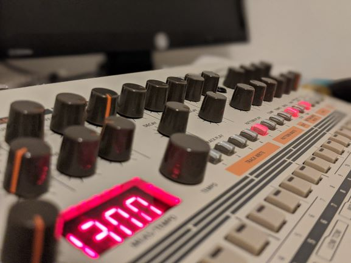

And I have always thought about making a website to show it off so here I am starting to figure that out.
I love music because it is so irrefutably human. When music comes on people know that music has come on. The human brain can't help but to recognize organized sound. The brain can't help but to remember, feel, and try to make sense of the organized sound. Music is bigger than anything else in the room. Music commands to be heard. Music can be the encompassment of raw emotion, it is emotion bundled up and to be experienced in real time. Music can fill with joy or sorrow. Music is one of the most human things.
My favorite kind of music is that of the electronic kind. I grew up on what some would call EDM, but I mostly now listen to techno and house although I'm not too picky when it comes to music. Anyway here's a little something I made a while back. Use headphones if you can.
I like to think that I don't love all types of music, yet. I feel like I will eventually get there as over time I have come to appreciate new genres as all music borrows from others. Last year I did an instrumental with a friend and I figured I would share part of that too since it was a collaboration I was really proud of. It is one thing to produce music and something you like, it is another wonderful thing to effectively communicate and collaborate with someone on such a delicate matter as making some tunes.
I do have a single piece of hardware though, it is a TR-09 drum machine and it is a lovely piece of gear that I enjoy performing on due to its classic sound and technical limitations which cause the user to be creative. The Tr-09 is a miniature version of the classic Roland TR-909 which is the sound of house music. House music by the way originated here in Chicago's south side.
It will get nicer over time, till then.